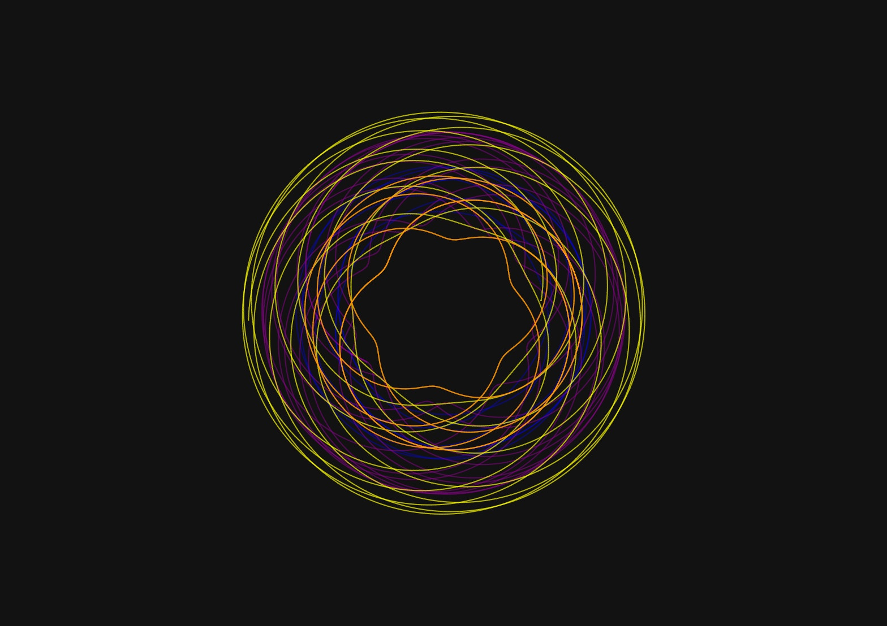
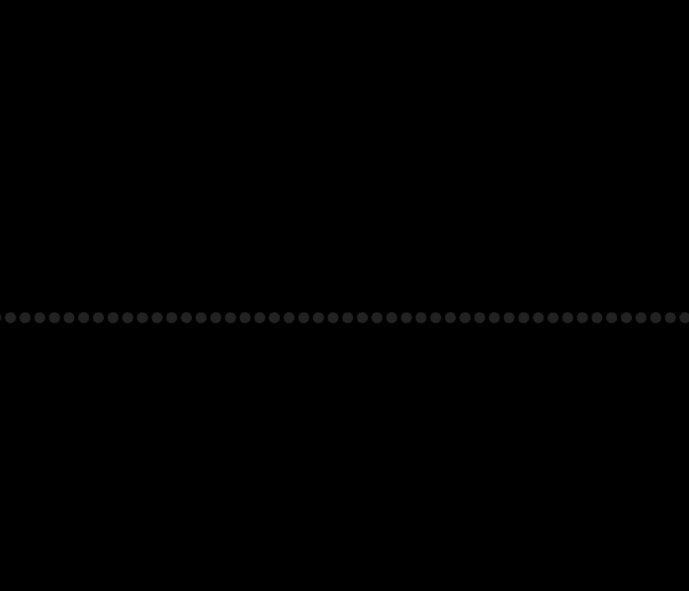
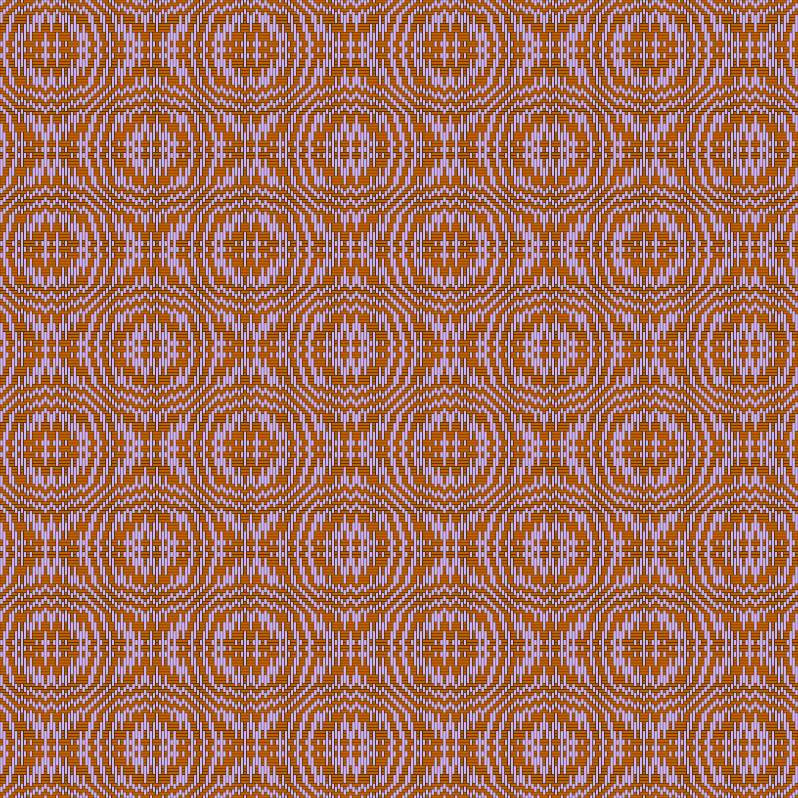
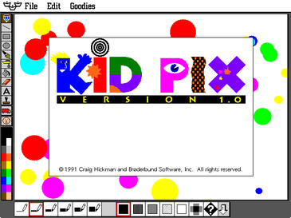
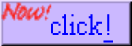
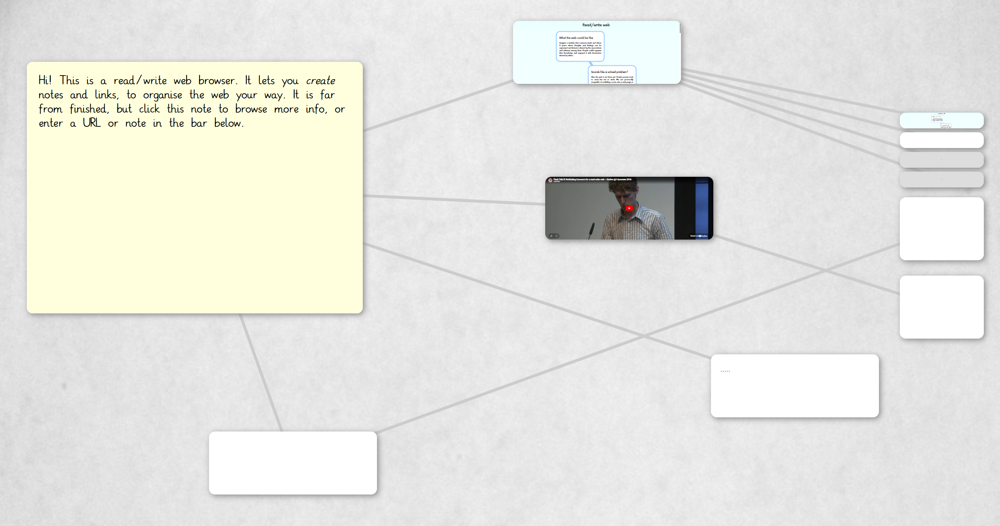

Inspiral Web
The web version of the Inspiral app by Nathan Friend

Web-Synth
A visual musical instrument on the web, made by Alex Chen and Yotam Mann.

Spider Web
Spider web drawn with HTML canvas arcTo Method by Matheus Lin.

web-loom
An early release of a web-component based loom draft editor by Patrick Steppan.

KidPix Web
Bitmap drawing program designed for children, originally by Craig Hickman

Web Diagram
Diagram exploration in Javascript by Laura Sinisterra

Web Button Maker
Online button generator made with love by Hekate

Demoland
Open source website template that allows you to distribute editable code demos (HTML, CSS, JavaScript) entirely within your web browser. This project was created by GD with GD to make teaching code easier, without the need for subscribing to any premium code distribution services.

Web memex
A read/write web browser for creating notes and links by Noah Hoffmann.

Bit Tripper
An interactive tool for exploring generative typography powered by deep neural networks by Mikki Janower.